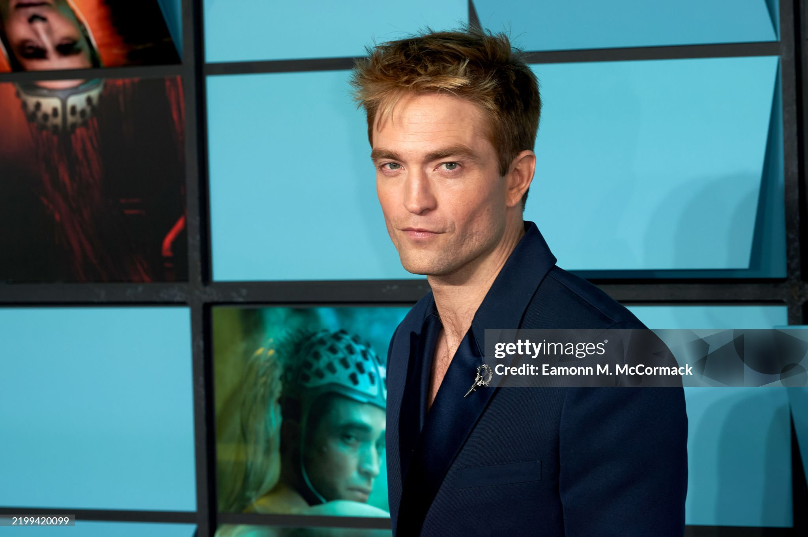
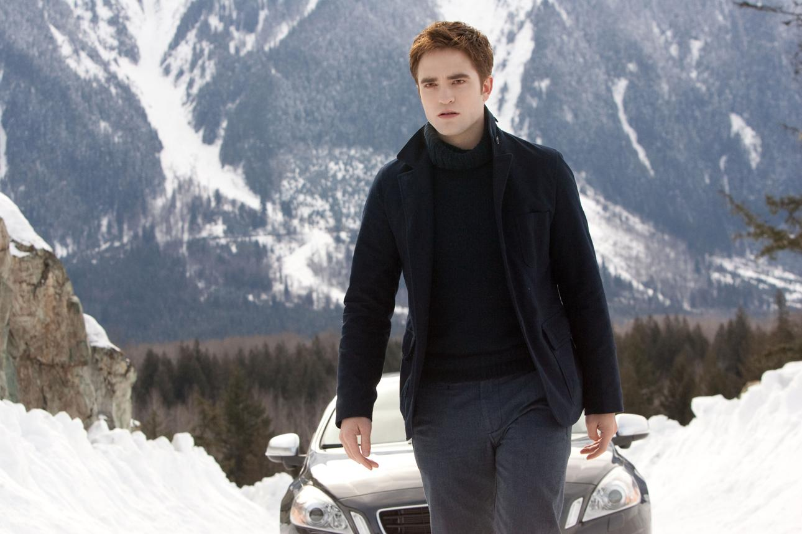
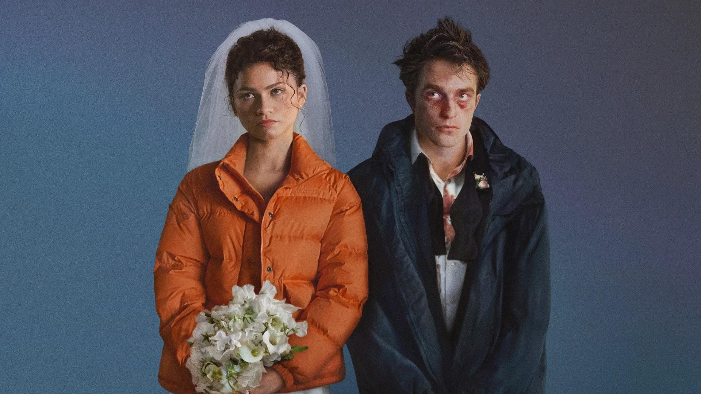
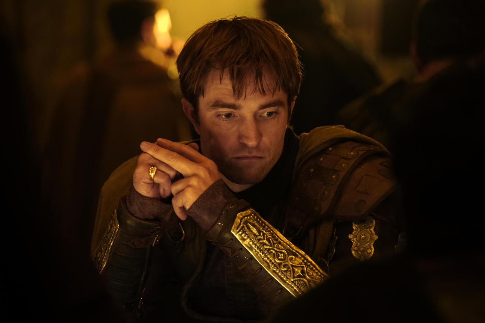
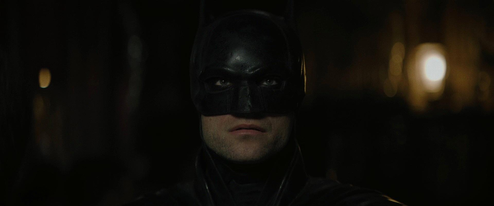
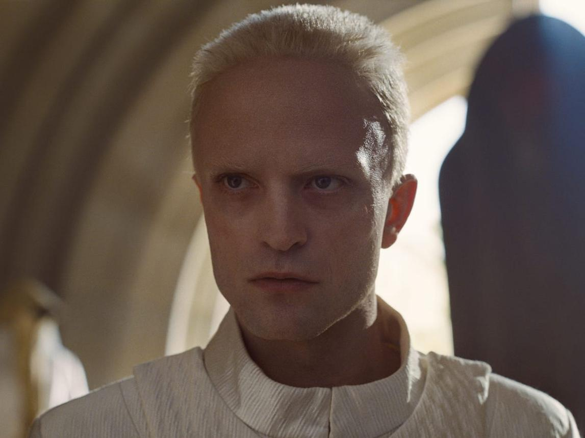

Filmes
A filmografia de Robert Pattinson reúne romances, dramas psicológicos, ficção científica, suspense, fantasia e filmes de super-heróis. Ao longo dos anos, o ator demonstrou interesse por histórias variadas, escolhendo projetos que permitem explorar diferentes aspectos de sua atuação.
Entre seus filmes mais conhecidos estão Harry Potter e o Cálice de Fogo (2005), Crepúsculo (2008), Lembranças (2010), Água para Elefantes (2011), Cosmópolis (2012), The Rover: A Caçada (2014), Bom Comportamento (2017), High Life (2018), O Farol (2019), Tenet (2020), The Batman (2022) e Mickey 17 (2025).
Cada produção representa uma etapa diferente de sua evolução artística. Enquanto alguns filmes o tornaram um fenômeno mundial, outros contribuíram para consolidar sua reputação como um ator disposto a experimentar personagens desafiadores e narrativas fora do convencional.
Sua filmografia mostra que Robert Pattinson não se limita a um único gênero ou estilo. Pelo contrário, sua carreira é marcada pela curiosidade artística e pela vontade de se reinventar a cada novo projeto.

Crepúsculo
Crepúsculo foi um dos projetos mais importantes da carreira de Robert Pattinson e o responsável por transformá-lo em um astro internacional. Lançado em 2008, o primeiro filme da saga adapta o romance de Stephenie Meyer e apresenta a história de Bella Swan, uma jovem que se apaixona por Edward Cullen, um vampiro que esconde sua verdadeira natureza.
Interpretado por Robert, Edward Cullen conquistou milhões de fãs com sua personalidade misteriosa, seu comportamento reservado e seu amor intenso por Bella, vivida por Kristen Stewart. A química entre os protagonistas foi um dos elementos que contribuíram para o enorme sucesso da franquia.
A saga é composta por cinco filmes: Crepúsculo, Lua Nova, Eclipse, Amanhecer — Parte 1 e Amanhecer — Parte 2. Ao longo da história, Edward enfrenta conflitos relacionados ao amor, à família, à imortalidade e à proteção daqueles que considera importantes.
Apesar de ter ficado mundialmente conhecido por esse papel, Robert Pattinson buscou se afastar da imagem de ídolo adolescente ao investir em produções mais experimentais. Ainda assim, Edward Cullen permanece como um dos personagens mais marcantes de sua trajetória e uma referência para os fãs do ator.

The Drama
The Drama é um filme de comédia dramática com elementos de romance e humor ácido, estrelado por Robert Pattinson e Zendaya. Dirigido por Kristoffer Borgli, o longa acompanha um casal aparentemente feliz e prestes a se casar, cuja relação começa a desmoronar após uma revelação inesperada.
Robert Pattinson interpreta Charlie, enquanto Zendaya dá vida a Emma. À medida que a semana do casamento avança, os protagonistas são obrigados a confrontar segredos, inseguranças e aspectos de seu relacionamento que prefeririam manter escondidos.
Lançado nos cinemas em abril de 2026, o filme explora os limites da confiança e as contradições dos relacionamentos amorosos. Com uma abordagem que mistura situações desconfortáveis, humor sombrio e drama psicológico, a produção oferece ao público uma história que vai além do romance tradicional.
Para Robert Pattinson, The Drama representa mais uma oportunidade de demonstrar sua versatilidade, participando de uma narrativa contemporânea que combina emoções intensas, conflitos pessoais e momentos de humor inesperado.

Odisseia
Odisseia (The Odyssey) é um épico de ação e aventura dirigido por Christopher Nolan, inspirado na obra clássica atribuída ao poeta grego Homero. A história acompanha a longa e perigosa jornada de Odisseu, rei de Ítaca, que tenta retornar para casa após a Guerra de Troia, enfrentando criaturas míticas, obstáculos extraordinários e desafios que colocam sua sobrevivência à prova.
No filme, Robert Pattinson interpreta Antínoo, um dos pretendentes de Penélope, esposa de Odisseu. Seu personagem ocupa uma posição importante nos conflitos que envolvem o retorno do herói e a disputa pelo poder em Ítaca.
O elenco também conta com Matt Damon, Tom Holland, Anne Hathaway, Zendaya, Lupita Nyong'o e Charlize Theron. A produção aposta em uma narrativa grandiosa, combinando mitologia, ação e drama humano com a abordagem cinematográfica característica de Nolan.
Lançado em julho de 2026, Odisseia marca mais uma colaboração entre Robert Pattinson e o diretor, com quem o ator já havia trabalhado em Tenet. O projeto também amplia sua presença em produções de grande escala e histórias inspiradas em obras clássicas da literatura.

Batman
Em 2022, Robert Pattinson assumiu um dos papéis mais emblemáticos da cultura pop ao interpretar Bruce Wayne, o Batman, em The Batman, dirigido por Matt Reeves. O filme apresenta uma versão mais sombria e investigativa do herói, mostrando um vigilante ainda nos primeiros anos de sua atuação em Gotham City.
Diferentemente de outras adaptações, a produção dá grande destaque ao lado detetivesco do personagem. Batman precisa investigar uma série de crimes cometidos pelo Charada, enquanto descobre uma rede de corrupção que ameaça a cidade e coloca em dúvida o legado da própria família Wayne.
A interpretação de Pattinson apresenta um Bruce Wayne introspectivo, atormentado e consumido pela necessidade de combater o crime. Em vez de retratar apenas um herói poderoso, o filme explora suas fragilidades, sua solidão e a dificuldade de encontrar um equilíbrio entre vingança e justiça.
A atuação de Robert recebeu atenção por apresentar uma abordagem diferente das versões anteriores do personagem. Com uma atmosfera noir, fotografia marcante e uma Gotham decadente, The Batman consolidou essa interpretação como uma das versões mais sombrias do herói no cinema.
O longa também fortaleceu a presença de Pattinson em grandes franquias, demonstrando sua capacidade de assumir um personagem conhecido mundialmente e dar a ele uma identidade própria.

Duna: Parte Três
Duna: Parte Três (Dune: Part Three) é a continuação da saga cinematográfica de ficção científica dirigida por Denis Villeneuve, baseada no universo literário criado por Frank Herbert. O filme adapta elementos de O Messias de Duna (Dune Messiah) e dá sequência à história de Paul Atreides, agora confrontado pelas consequências de seu domínio sobre o Império.
Ambientada aproximadamente duas décadas após a ascensão de Paul ao poder, a trama explora os conflitos políticos, as conspirações e os dilemas pessoais que surgem quando o protagonista precisa lidar com o peso de suas decisões. O futuro do Império e o destino das pessoas próximas a Paul estão ameaçados por forças que desafiam sua autoridade.
Robert Pattinson integra o elenco como Scytale, personagem importante no desenvolvimento dos conflitos políticos e das conspirações presentes na história original. Sua participação aumenta a expectativa em torno do filme, especialmente pela complexidade do personagem e pela importância que ele possui no universo de Duna.
O elenco reúne nomes como Timothée Chalamet, Zendaya, Florence Pugh, Rebecca Ferguson, Jason Momoa e Anya Taylor-Joy. A direção de Denis Villeneuve promete dar continuidade à escala visual grandiosa e à atmosfera intensa que caracterizam os filmes anteriores.
Com estreia prevista para 18 de dezembro de 2026, Duna: Parte Três representa um dos projetos mais aguardados dessa nova fase da carreira de Robert Pattinson, que continua alternando entre grandes franquias e produções de estilos variados.
